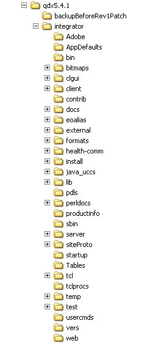
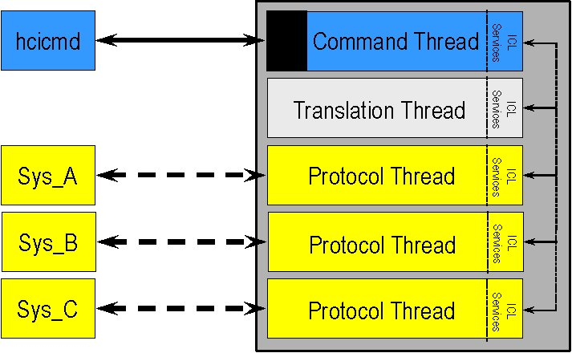
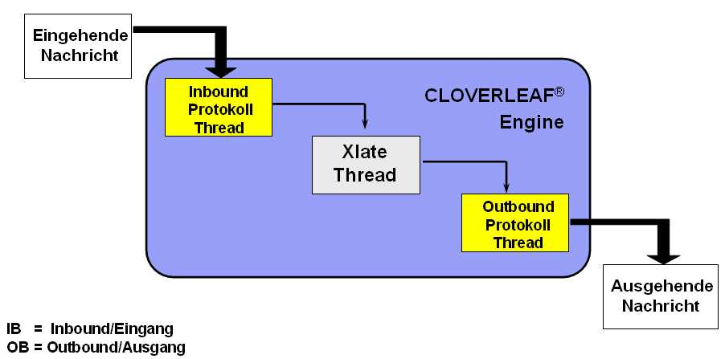
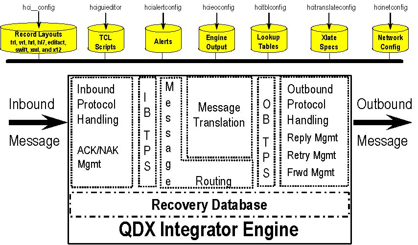

Der Host Server kommuniziert mit der Cloverleaf® Integration Services Engine. Er läuft auf demselben Rechner wie die Engine.
Der Host Server stellt die Verbindung zum CLOVERLEAF® Integration Client zur Verfügung. Der Host Server kontrolliert die Zugriffe der Remoteclients und stellt die Grundlage für die Basic Security zur Verfügung.
Cloverleaf® Integration Services Clients sind die GUIs (Grafisches Userinterface), die mit dem Host Server kommunizieren. Grundsätzlich wird immer eine GUI zusammen mit dem Host Server auf dem Rechner installiert, auf dem die Engine installiert ist. Zur Administration der Prozesse und Konfiguration von Sites kann der Client auf beliebig vielen Remoterechnern installiert werden.
· Die Root enthält eine Cloverleafversion.
· Der Rootname enthält die Versionsnummer, z. B. 5.4.1
· Parallele Installationen von verschieden Cloverleafversionen auf der gleichen Hardware sind auf Grund der unterschiedlichen Rootnamen möglich.
· Eine Root kann mehrere Sites enthalten.
· Innerhalb einer Site sind alle Konfigurationsdateien, Prozessdateien und Logdateien gespeichert.
· Eine Site ist unabhängig von anderen Sites innerhalb der gleichen Root.
Fazit: Schulungs- und Testumgebungen können auf der gleichen Hardware eingerichtet werden.
Ein Blick in die Verzeichnisstruktur verdeutlicht die Hierarchie:
|
Installations- und Rootverzeichnisse
Das Installationsverzeichnis beinhaltet die CLOVERLEAF® Root-Verzeichnisse ($HCIROOT).
|
Root - Verzeichnis der Version 5.4.1
In den Root – Verzeichnissen befinden sich das CLOVERLEAF® Integrator Services Programm.
Die Root
- Verzeichnisse enthalten u. a. die Backupdateien, die vor der Installation
von Patchen angelegt werden.  |
Site - Verzeichnis:
Innerhalb der Integratorstruktur werden die Site-Verzeichnisse ($HCISITEDIR) abgespeichert Die Site – Verzeichnisse beinhalten alle Konfigurationsdateien. Diese sind analog den eingesetzten Werkzeugen unterteilt.
Das exec Verzeichnis enthält Laufzeitinformationen.
|
EXEC - Verzeichnis:
Die Laufzeitinformationen enthalten die Recovery- und Errordatenbank, das Logfile des Monitor Daemons, das Lockfile des Lockmanagers und auch der CLOVERLEAF® Engine.
Das Verzeichnis $HCISITEDIR/exec/processes enthält für jeden im Network Configurator definierten Prozess das sogenannte "Arbeitsverzeichnis".
Dieses enthält die
Prozess Logdateien, die SMATdateien
und alle Dateien die nicht mit einem absoluten Pfad im Network
Configurator definiert worden sind. |
CLOVERLEAF® verwendet die Prozess / Thread Architektur zur gezielten Allokation von Prozessorzeiten.
Der CLOVERLEAF® Prozess besteht mindestens aus 3 Threads.
·
einem Command Thread (prozessname_cmd)
·
einem Translation Thread (prozessname_xlate)
· und beliebig vielen Protokoll Threads
Es gibt keine Beschränkung der Protokoll Threads pro Prozess.
Die Leistung und Geschwindigkeit eines Prozesses ist von mehreren Faktoren abhängig. Dazu zählen u. a. die Faktoren: Hardware, Prozessorleistung, Hauptspeicher, eingesetztes Betriebssystem, Konfiguration der Protokoll Threads. Zu Berücksichtigen ist zudem, dass pro Prozess ein Translation Thread alle Routings und Übersetzungen verarbeitet.
Unabhängig vom Betriebssystem fordert der Prozess die benötigen Systemresourcen wie CPU Arbeitszeit und Hauptspeicher an. Die einzelnen Threads innerhalb des Prozesses bekommen nun nacheinander benötigte Ressourcen zur Verfügung gestellt.
Der Prozess koordiniert die interthread Kommunikation. Dazu hat die Cloverleaf®Integrated Service Engine eine ICL (Interthread Communications Libary) welches es ermöglicht, dass die Threads sowohl innerhalb eines Prozesses miteinander wie auch Prozessübergreifend miteinander kommunizieren können.
Durch prozessübergreifende Kommunikation kann ein Geschwindigkeitsvorteil dann erzielt werden, wenn sich 2 Inboundthreads die Translationarbeiten teilen.
Prozessinterne Kommunikation hat den Vorteil, dass alle Threads eines Prozessen im gleichen Speicherbreich arbeiten und dadurch entsprechend schnell die Daten untereinander austauschen können. Die Daten müssen nicht von einem reservierten Adressbereich in den nächsten reservierten Adressbereich kopiert werden.

Das Erzeugen eines Prozesses erfolgt im des Network Configurator. Bei
der Anlage bzw. Konfiguration eines Protokoll Threads wird automatisch der
angegebene Prozess, sofern dieser noch nicht existiert, angelegt. Ist der Prozess
bereits vorhanden, so wird der Protokoll Thread dem bestehenden Prozess
zugeordnet.
Der Command Thread steuert intern alle Threads, empfängt die Befehle des Network Monitors und die hcicmd-Befehle aus der Shell Window. Er steuert die Verarbeitungsreihenfolge. Das Logfile enthält Einträge die der Command Thread auslöst. Diese Einträge sind mit der Thread Bezeichnung prozessname_cmd gekennzeichnet.
Der Translation Thread bekommt jede Nachricht vom Inbound Protokoll Thread und gibt sie an mind. einen Outbound Protokoll Thread ab. Der Translation Thread parsed die Nachricht, übernimmt das Routing und ggf., wenn gefordert, das Übersetzen der Nachrichten in ein anderes Datensatzformat. Dabei wird grundsätzlich immer zuerst geroutet und anschließend übersetzt, da die Übersetzungen in Abhängigkeit mit dem Zielsystem einer Nachricht stehen. Im Engine Log sind die Einträge, welche vom Translation Thread geschrieben werden, mit der Thread Bezeichnung prozessname_xlate gekennzeichnet.
Der Protokoll Thread ist prinzipiell für das Empfangen der Nachrichten von bzw. das Senden der Nachrichten an das Subsystem zuständig. Der Nachrichtendurchfluss und die Warteschleifen innerhalb der Threads sind eng mit dem Status der Nachrichten in der Recovery Datenbank verbunden. Einträge des Protokoll Threads im Engine Log sind mit dem Namen des Threads gekennzeichnet.
Die gesendet Nachricht wird vom Inbound Protokoll Thread empfangen, an den Translation Thread weitergegeben und über den Outbound Protokoll Thread ausgeliefert.

Eine Nachricht kann nie direkt von einem Inbound Protokoll Thread an einen
Outbound Protokoll Thread weitergegeben werden, selbst wenn die Nachricht raw, d. h. ohne Übersetzung geroutet werden soll. Das Routing kann nur der Translation Thread durchführen.
Alle „Bausteine“ die mit den Werkzeugen von CLOVERLEAF® erstellt werden, sind als "Tcl Keyed Lists" in ASCII Dateien abgelegt. Diese Dateien sind mit einem Texteditor einsehbar und editierbar. Es wird dringend empfohlen die Strukturen der Dateien nicht zu verändern, da sonst ein Laden der Dateien für CLOVERLEAF® nicht mehr möglich ist.
Diese Konfigurationsdateien werden bei Bedarf zur Laufzeit von CLOVERLEAF® geladen.
